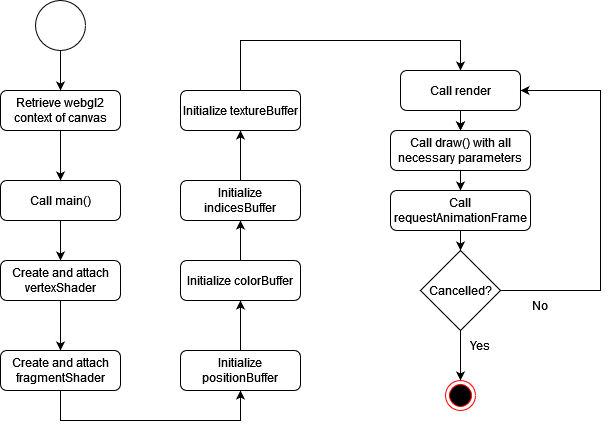

3D-Grafik: Hintergrundbild und Kubus mit Textur
Dokumentation (Workload ca. 6 h)
Programmablauf

Methodenbeschreibung
-
draw(positionBuffer, colorBuffer, indicesBuffer, textureBuffer, texture, program)
In this method the given buffers will be loaded in the GPU-Vertex-Buffer and after that binded
to the Vertex- or Fragment-shader. Texture is also set. Also a perspective on frontview is set. The cube will be drawn
with gl.drawElements(gl.TRIANGLES, 36, gl.UNSIGNED_SHORT, 0);
-
initPositionBuffer()
In this method the position of all 24 vertices will be loaded.
-
initColorBuffer()
In this method the colors for all 6 faces will be loaded.
-
initIndicesBuffer()
In this method the indices for the position triangles will be loaded.
-
initTextureBuffer()
In this method the texture buffer is loaded.